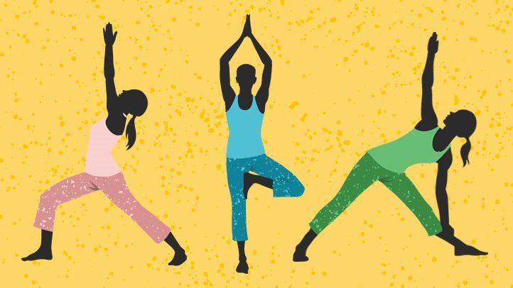
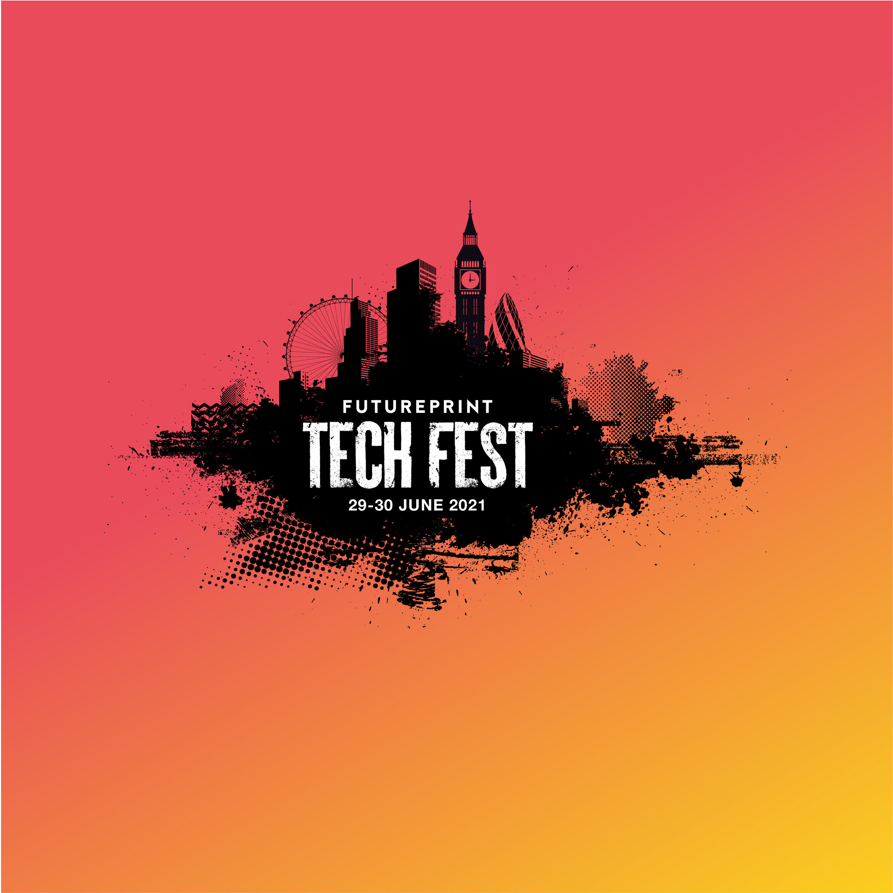
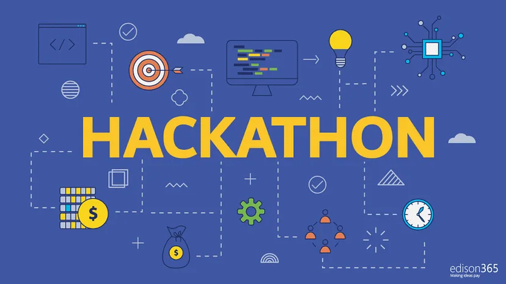
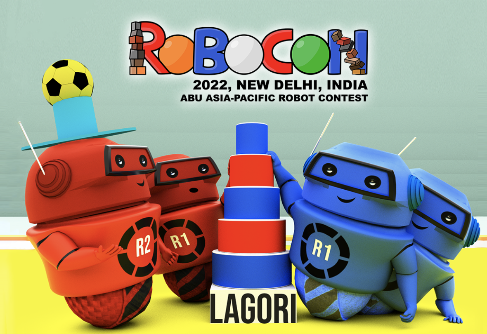

| ACTIVITIES | DESCRIPTION | IMAGE |
|---|---|---|
| Sports | Sport pertains to any form of physical activity or game, often competitive and organized, that aims to use, maintain, or improve physical ability and skills while providing enjoyment to participants and, in some cases, entertainment to spectators. |  |
| Yoga | Yoga is a practice that connects the body, breath, and mind. It uses physical postures, breathing exercises, and meditation to improve overall health. Yoga was developed as a spiritual practice thousands of years ago. Today, most Westerners who do yoga do it for exercise or to reduce stress. |  |
| Tech Fest | Techfest is an initiative by GTU to foster the innovative minds of students in the field of Engineering & Technology. The event is extravagant and provides a plateform to display talent, innovation, imagination, creativity and competitive spirit. GTU ZONAL LEVEL Mega Carnival incorporates a variety of Technical Events. |  |
| Hackathon | A hackathon, also known as a codefest, is a social coding event that brings computer programmers and other interested people together to improve upon or build a new software program. The word hackathon is a portmanteau of the words hacker, which means clever programmer, and marathon, an event marked by endurance. |  |
| Navratri Celebration | Navaratri is an annual Hindu festival observed in honour of the goddess Durga, an aspect of Adi Parashakti, the supreme goddess. It spans over nine nights (and ten days), first in the month of Chaitra (March/April of the Gregorian calendar), and again in the month of Ashvin (September–October). | |
| Robocon | The ABU Asia-Pacific Robot Contest (ABU Robocon) is an Asian-Oceanian college robot competition, founded in 2002 by Asia-Pacific Broadcasting Union. In the competition robots compete to complete a task within a set period of time. |  |